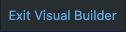

Hello! I'm a technical writer living in Brooklyn, NY. I've been working in this field professionally for over a year now. As a transplant from North Carolina, I spent the past year in the Research Triangle working as a technical writer with Biogen, a leading biotech and pharmaceutical company.
My career started in 2019 when I decided to go to grad school for my master's degree. After learning about technical writing and researching the field, I enrolled in East Carolina University's MA in Technical Communications program. Two years later I graduated and moved to Raleigh to work for Biogen on a one-year contract.
Once my contract ended, I moved to the New York area with the hopes of continuing my career in a larger market and in a more vibrant city.
I am transitioning my industry focus to tech. I've long admired the field of computer science and the infinite intracies found within. I've been teaching myself the basics of programming in preparation, starting with the html and css of this website. Here is a link to the code repo.
Adding an image to your WordPress website is as simple as ever. This guide shows the user how to successfully upload, edit, and integrate an image using the WordPress Visual Builder tool.
The example used in this guide shows how to add a new award badge to the homepage of the Society for Technical Communication(STC)-Carolina chapter's website.
WordPress
WordPress is a popular option for creating your own website due to their open-source content management system (CMS). The CMS provides a plugin architecture that makes it simple to design a website, as you'll see in this guide.
Visual Builder
The Visual Builder is the CMS editor tool that allows users to create and edit web content for their blog, business, or personal website.
To get started, log in to your WordPress account. Once logged in, you'll be redirected to your Dashboard. On the left side of the screen, in the navigation menu, hover over  , and select
, and select  .
.
The Media Library allows you to upload a new image or choose from one in the existing library.
By clicking the  button, a file upload window appears.
button, a file upload window appears.
You can also choose an image in your existing WordPress library by simply clicking one of the thumbnails.
Before editing, we can alter the metadata of the image. Click the  button. We'll use the image URL as our src attribute in the Visual Builder later.
button. We'll use the image URL as our src attribute in the Visual Builder later.
Now, click to continue.
to continue.

Changing the Size
This page allows you to change various elements, including the aspect ratio to ensure your image fits the way you need it to on your website.

When you're satisfied with your changes, click the save button beneath the image and close the window.
Now it's time to add the image to your website. In the top left corner of the page, you will see a home icon, followed by the name of your site. Hover over the home icon and click the  button when it appears.
button when it appears.

Sections and Modules
This link takes you to your website, but this time there's a toolbar at the top of the page.
The WordPress web builder toolbar serves as a resource hub while you manage your website. To begin adding an image, we need to enable editing on the page. Click on the Enable Visual Builder button to get started.

For this example, we're updating the Awards section for the STC-Carolina homepage. In the WordPress Visual Builder tool, you can view and manage all the separate sections on the page. Within a section you can nest modules of different types of content.
The module in this example is used to organize the award badge images for STC-Carolina. By clicking in on one of the award badges, the grey module menu pops up.
Click the gear icon so we can add our image in code.
so we can add our image in code.

The module settings menu presents you with a wide variety of web-editing options. The structural elements such as the img elements below are added and edited in this Content tab. The design and styling of the elements are added in the Design and Advanced tabs.

To add the award badge selected from the Media Library, paste the URL of the image copied to the clipboard from the Editing an Image step. Wrap the URL in the same HTML format as the other award badges.

Save your work with the green check icon 

And with that, your work is finished. The Visual Builder has a default styling that arranges the images in rows, but you can use the module settings menu to alter the styles.
To save your work and exit, click  at the top of the page.